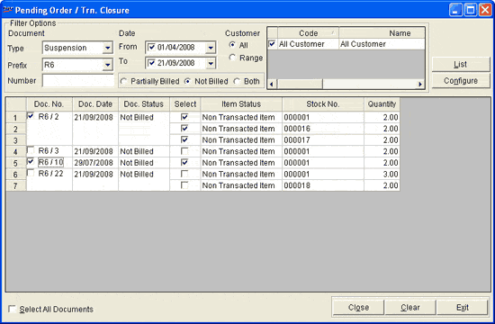

You may want to cancel some pending orders for various reasons. This option can be used for the same.
How to reach: Sales > Pending Order/ Trn. Closure
The Pending Order / Trn. Closure window is displayed.

Filter Options: Various filter options to identify the documents (pending orders) to be closed. It is mandatory to select the Document Type, while all other fields are optional.
Document:
Type: Select the type of document to be closed.
Prefix: Select the prefix of the documents to be selected for closure, in case you want to close only the documents with the specified prefix.
Number: Select the number of the document to be closed, in case there is only one document.
Date:
From: Select, if you want to specify the date from which the documents are to be chosen for closure. Then, select a date.
To: Select, if you want to specify the date to which the documents are to be chosen for closure. Then, select a date.
Customer: Click All to select all customers or Range to select specific customers. If you have clicked All, the list on the right would have All Customer. If the selection is Range, all customer codes and names are displayed in the list. Click to select the relevant ones.
List: Click to list the documents as per the selection criteria mentioned.
Configure: Click to modify the display columns in the grid. Doc. No., Doc. Date, Customer Name, Doc. Status, Item Status, Stock No. and Quantity are displayed by default. Select any other columns or deselect any of the selected ones, as required. Doc. No., Stock No. and Quantity cannot be deselected.
The details in the grid are the following.
Doc. No.: The number of each document. Select, if you want to close the document.
Doc. Date: The date on which the document is created.
Doc. Status: The current status of the document whether the billing is done or not.
Select: To choose specific items in the document, in case you want to cancel the order for some items.
Item Status: The current status of the item whether the transaction is done or not.
Stock No.: The stock number of the items in each document.
Quantity: Item quantity of the items in each document.
Select All Document: Choose to select all documents listed in the grid for closure.